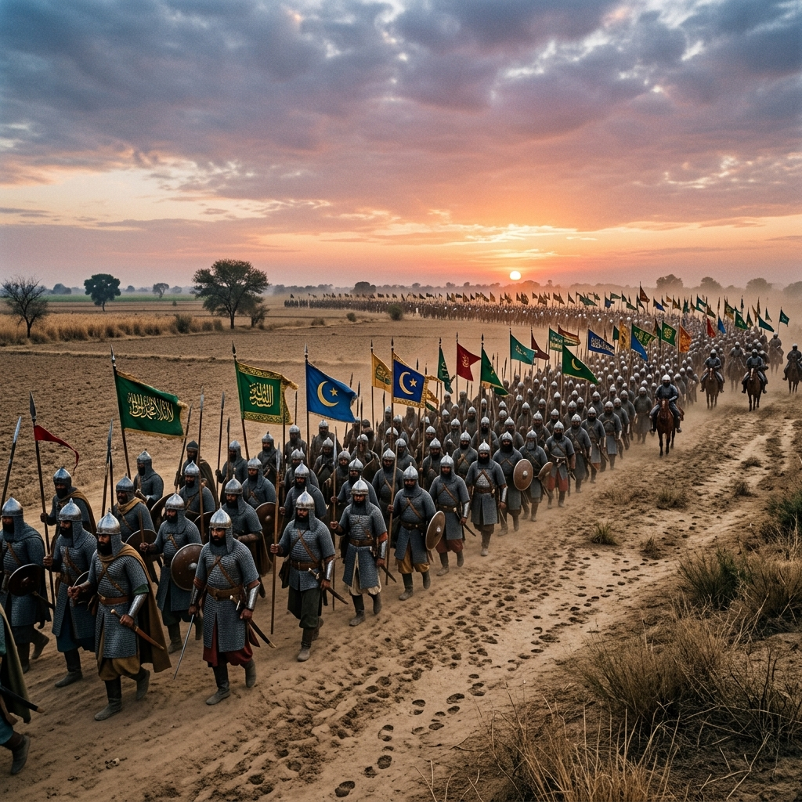
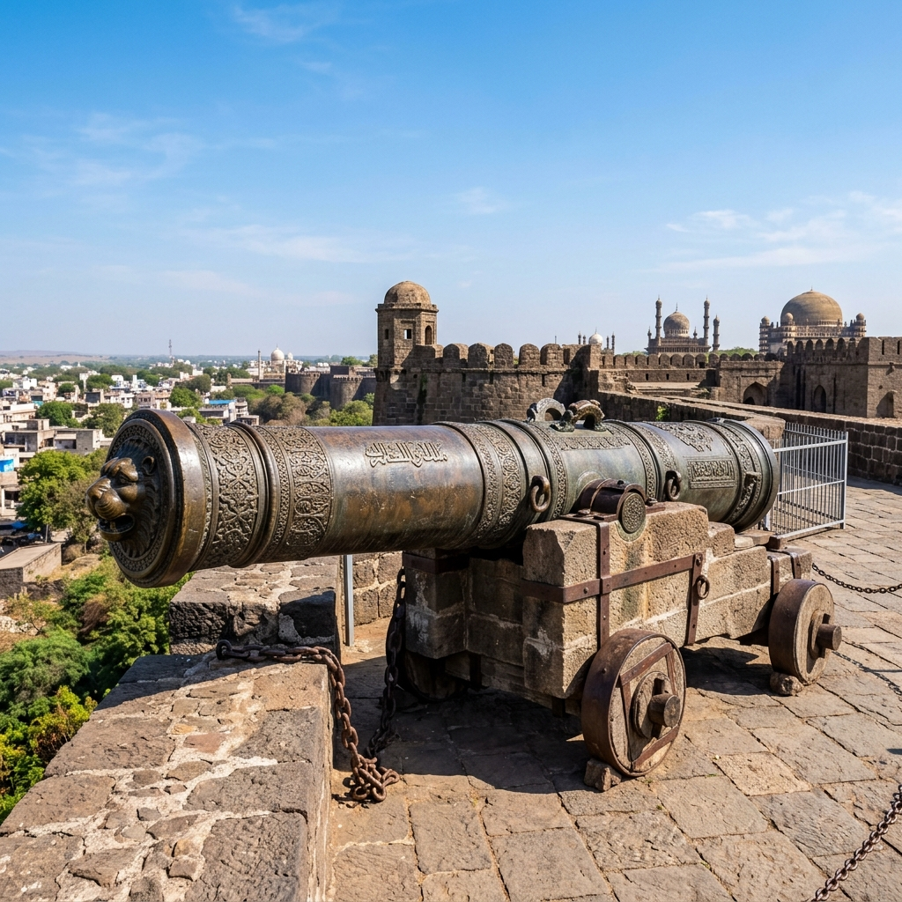
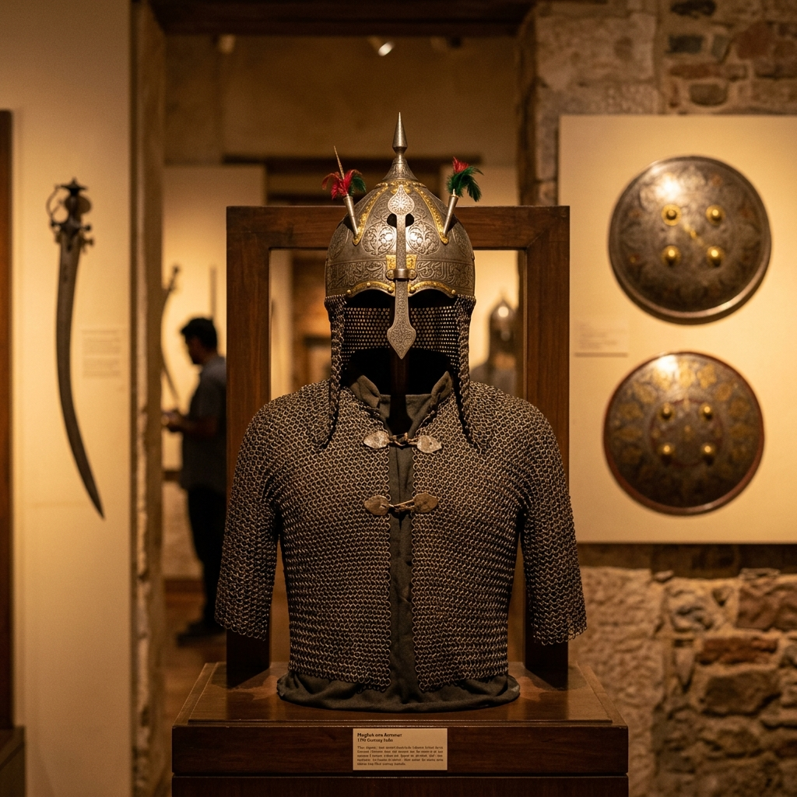

Battle of Khajwa Explorer
Step onto the plains of Fatehpur, Uttar Pradesh. Relive the dramatic succession clash where Aurangzeb overcame camp betrayals and war elephant charges to defeat his brother Shah Shuja and secure the Mughal throne.
The Fratricidal Struggle for Shah Jahan's Crown
In late 1657, the illness of Mughal Emperor Shah Jahan triggered a fierce war of succession among his four sons: Dara Shikoh, Shah Shuja, Aurangzeb, and Murad Bakhsh. Aurangzeb emerged victorious in the western theater, defeating Dara at Samugarh in June 1658 and crowning himself Emperor at Delhi.
However, Shah Shuja, the Governor of Bengal, refused to acknowledge Aurangzeb's title. Mobilizing a massive army supported by war elephants, Shuja marched westward from Patna towards Delhi-Agra. Aurangzeb rushed to confront him, setting the stage for a final showdown at Khajwa in January 1659.
🏛️ At a Glance
- Combatants: Imperial forces of Aurangzeb vs. Bengal divisions of Shah Shuja.
- Location: Khajwa (Khajuha), Fatehpur, Uttar Pradesh.
- Date: 5 January 1659 CE.
- Outcome: Decisive Imperial victory; Shuja's retreat and exile.
Commanders and Belligerents
Explore the profiles of the royal brothers and advisors who led the forces at Khajwa.
Aurangzeb
The newly crowned Mughal Emperor. Known for his tactical composure, resourcefulness, and ability to maintain control despite unexpected setbacks.
Shah Shuja
Aurangzeb's elder brother and Governor of Bengal. He commanded a wealthy army backed by armor-clad war elephants and artillery.
Mir Jumla
Aurangzeb's premier commander and military advisor. His tactical flank reinforcements turned the tide of the battle.
Jaswant Singh
Rajput Maharaja of Marwar. He secretly negotiated with Shuja and raided Aurangzeb's baggage camp in the pre-dawn hours before deserting.
📈 Strategy & Counter-Measures
- The Night Camp Raid: Jaswant Singh's pre-dawn treason raided the imperial baggage, but Aurangzeb forbade troops from breaking formations.
- Anti-Elephant Rocket Fire: Mughal rocket throwers used gunpowder *ban* rockets to panic Shuja's armored charge.
- Mir Jumla's Reinforcements: Mir Jumla bolstered the imperial left wing against Shuja's heavy pressure.
- Poise Under Fire: Aurangzeb's decision to remain mounted on his elephant reassured the troops and prevented panic.
Composure Amid Treason and Elephant Charges
Hours before the battle commenced on 5 January 1659, Maharaja Jaswant Singh of Marwar betrayed Aurangzeb. He launched a surprise pre-dawn raid on the imperial baggage camp, looting supplies before marching away towards Jodhpur. Showing legendary composure, Aurangzeb refused to delay the battle, declaring the raid a minor event to preserve troop morale.
When the battle began, Shuja unleashed a line of heavily armored war elephants to crush the imperial lines. Aurangzeb countered by ordering his musketeers and rocket divisions to deploy gunpowder rocket bombards. The screaming rockets terrified the elephants, causing them to run amok and trample Shuja's own infantry.
Consolidation of Aurangzeb's Reign
The triumph at Khajwa resolved the eastern front of the succession struggle and solidified Aurangzeb's crown.
Sovereignty Secured
Shuja's defeat ended his bid for Delhi, leaving Dara Shikoh as the only remaining threat, who was subsequently captured.
Flight to Arakan
Shah Shuja retreated to Bengal, pursued by Mir Jumla. He eventually fled to the Kingdom of Arakan (modern Myanmar) where he died in obscurity.
Administrative Control
Mir Jumla was appointed Governor of Bengal as a reward for his services, initiating a period of trade expansion in the east.
Expedition Chronology
Follow the campaign events of the 1658–1659 War of Succession.
Fratricidal Spark
Shah Jahan falls ill; Shah Shuja crowns himself in Bengal and Murad Bakhsh in Gujarat. Aurangzeb begins his march north.
Aurangzeb's Coronation
Aurangzeb defeats Dara Shikoh at Samugarh, deposes Shah Jahan, and crowns himself Emperor in Delhi.
Jaswant's Treason
Jaswant Singh raids the imperial camp, but Aurangzeb restores order and holds the line.
Imperial Victory
Aurangzeb's rocket divisions panic Shuja's war elephants, routing the Bengal forces. Shuja flees east.
Museum Highlights of the Succession War
Explore the campaign sites, artillery, and protective gear of the period.

Khajwa Battlefield Plains
The historic plains near Fatehpur where Aurangzeb secured his crown.

Mughal Imperial Artillery
The heavy bronze cannons deployed by Aurangzeb's batteries.

Imperial Officer Armor
Chainmail armor and steel helmet worn by Mughal commanders.
📚 References & Further Reading
- Kazim, Muhammad (c. 1688). Alamgirnama (The History of Aurangzeb). Royal Asiatic Society.
- Bernier, Francois (1684). Travels in the Mogul Empire, A.D. 1656-1668. Archibald Constable & Co.
- Sarkar, Sir Jadunath (1912). History of Aurangzib: Vol II - War of Succession. M.C. Sarkar & Sons.
- Khafi Khan, Muhammad Hashim (c. 1732). Muntakhab-al Lubab. Bibliotheca Indica.